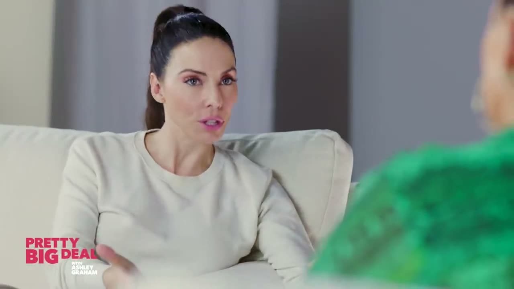

Apple on device
Free
- Runs on your Mac, offline
- No key, no account
- macOS 26 with Apple Intelligence
choco.video for Mac
Drop in a podcast or talk. choco.video picks the moments worth posting, keeps the speaker in frame and captions every word, all on your Mac.
Workaholism Killed My CreativityScore 78
A 47-minute interview went in. Four minutes later, four captioned clips came out, each framed on whoever was talking. Thirty seconds, no sound needed.
Real output from two podcasts. Choose a clip to watch it and read the picker's reasons.
Apple's built-in speech engine writes a word-timed transcript at about 42 times real time. Older Macs use Whisper instead.

3.8minutes to clips
Measured on an M3 Pro: the 47:52 interview went from file to four finished clips in 226 seconds, about 4.7 seconds per minute of video, transcription included.
The app costs nothing. Picking clips needs a language model; use Apple's own for free, or a key you already have.
Free
~2¢per hour of video
Your rate
Download the app, drop in a recording and get ranked, captioned clips a few minutes later. Your video stays on your Mac.